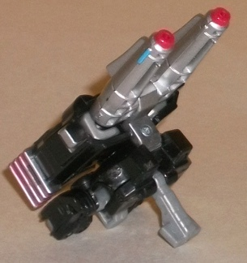
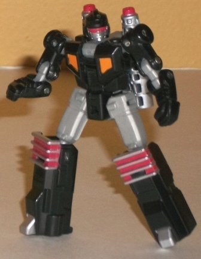
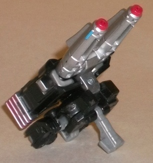
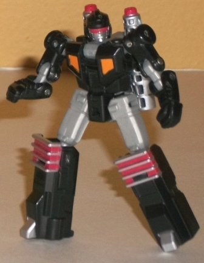
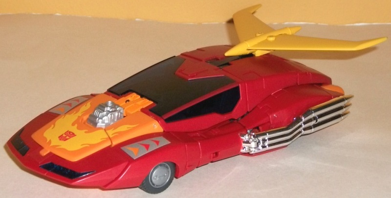
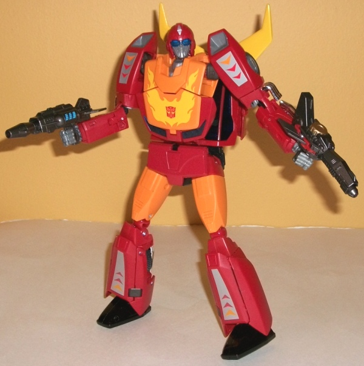
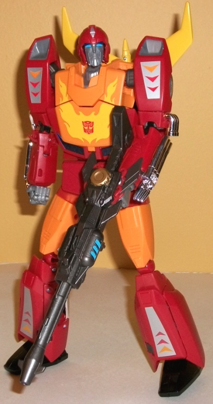

 
Allegiance : Autobot
Difficulty of Transformation : Easy
Color Scheme : Black, light milky gray, silver, and some light orange, sky blue, and red
Individual Rating : 8.0
Set Price
: $50 U.S.
 Offshoot
Offshoot


Allegiance
: Autobot
Difficulty of Transformation
: Easy
Color Scheme
: Black, light milky
gray, silver, and some light orange, sky blue, and red
Individual Rating
: 8.0
Offshoot is Hasbro's
trademark-approved name for Rodimus' Targetmaster, and his alternate mode
is thus, obviously, a gun. For the most part, this mode is fairly solid,
especially considering it's secondary in terms of the overall design and
how poor the weapon modes are on "Minicon-esque" toys this size. First,
the caveats; yes, the hands are fairly obvious on the lower half of the
body of the gun, and there's a bit of a hollow section near the back that
Offshoot's robot head sticks up a bit in. But honestly, the silouhette
of the gun mode is great, and the focus is on the two large double-barrels
(neither of which can actually fire any actual projectiles), and the legs
fold in on themselves quite nicely to form the top of the "main body" of
the gun, with the detailing near the back looking like a heat vents. The
overall color scheme of black and gray/silver is a bit dull and overdone,
but he's a small guy (the size of a large Minicon), so it's not that big
of a deal. He's not the focus of this set, anyways. The shade of silver
paint used is quite good, though, and the bits of red that are there pop
against the other colors quite a bit. There's a little peg that sticks
out from the bottom of this mode so that Rodimus can hold Offshoot in his
hands-- unfortunately, it's not all that firm of a grip.
Offshoot's robot mode
is the better of his two modes, and is remarkably well-done considering
the size. His proportions are pretty well-done (though his lower legs are
a tad oversized), and the two gun barrels and the handle fold up nicely
behind his back-- the former actually complementing his overall look, with
one barrel behind each shoulder. The detailing on the parts that need it--
like the face-- is pretty well-detailed, though overall Offshoot admittedly
doesn't have the most intricate detailing. The color breaks up a little
better in this mode, and the orange bits on the chest help with that as
well. As far as articulation, this is one of Offshoot's high points-- he
can move at the neck (at two points), shoulders (at two points), elbows
(at two points), hips, and knees, and many of those joints are balljoints.
This is simply REMARKABLE articulation for this small of a toy. Unfortunately,
his hollow feet and slight back-heavyness limit a bit the amount of poses
you can put him in where he's standing by himself, but he still has a pretty
darn full range of motion.
 Rodimus
Prime
Rodimus
Prime



Allegiance
: Autobot
Difficulty of Transformation
: Very
Hard
Color Scheme
: Light orange, red,
transparent dark blue, yellow, and some chrome silver, glossy black, sky
blue, charcoal black, light milky gray, and silver
Individual Rating
: 9.0
Rodimus' vehicle mode,
as you'd expect from a Masterpiece toy, is pretty darned cartoon-accurate
(as Hot Rod; the massive trailer to make him Rodimus Prime only comes with
the Japanese release). The proportions are generally pretty spot-on, though
the tailpipes and rubber wheels are a tad small. There is also one-- but
only one-- major caveat in this mode that, to me, is the primary detractor
from this toy's rating. The odd dip in the side rims of this mode makes
it obvious that that's where Rodimus' robot arms, particularly since the
(rather loose) panels that cover up his hands can be pretty persnickety,
and don't really slot into place. That's the primary reason why Rodimus
Prime's transformation rating is "Very Hard"-- completing that last step
to get the hands in just the right place for vehicle mode so that everything
looks "right" takes quite a lot of effort, particularly the first few times
you transform him to this mode. It's quite frankly bad design that I'm
not used to seeing on Masterpiece figures. However, that aside, the aerodynamic
form calls out to Hot Rod/Rodimus quite well, and the dark red/light orange/yellow
color scheme fits right in with his fiery personality and is pretty spot-on
G1. (Unfortunately, this adherence to his G1 self also means that his mold
detailing and number of paint apps are pretty sparse for a figure of this
size-- though in the latter's case, the plastic color is broken up enough
where it's not a big deal.) I also quite like that the windows are transparent,
but of a dark enough blue where you really can't see the interior. Granted,
the interior is fairly detailed, but if you lift open the roof you can
see that Rodimus' feet poke up right into the seats, which is realy unsightly,
particularly considering the rest of the interior has no paint detailing
to try to take your attention away from them. Rodimus is also supposed
to mount either Offshoot or one of his guns (which can't be stored in either
of his modes, unfortunately) onto the exposed engine block in front of
the cockpit, but it's a bit of a "soft" hold-- they tend to not stick in
their slots all that well, and fall off pretty easily.
Rodimus' robot mode
is outstanding, and was almost certainly the primary focus of this Masterpiece
figure. It's amazing how accurate they were able to get his proportions
nd details matching up with his G1 cartoon appearance. Other than a backpack
made up of panels of his vehicle mode folded over each other that pokes
out SLIGHTLY more than it should, there's no vehicle mode extras whatsoever.
This is totally and completely Rodimus/Hot Rod, otherwise. The chrome pipes/guns
on his forearms, the somewhat skinny (for a Transformer) legs, the head
and helmet design, the chest-- it's all spot-on and amazing. His backpack
does have a bit of a hard time staying all clipped together, however, and
the balljoints his thumbs are on pop out a little easily. His articulation
is also fantastic-- he can move at the neck, shoulders (at two points),
elbows (at three points), wrists, at the base of each thumb, at the base
and at the midsection of the four fingers on each hand (though all of the
four fingers on each hand move as one piece), as well as movement at the
waist, hips (at four points), knees (at three points), and ankles (at two
points). Given that he's not really back-heavy at all, his proportions
are quite humanoid for a TF, and his feet are metal (thus giving them more
mass and weight), you can get him into a TON of poses. (If you swivel his
waist too much from its "center" point, though, than it tends to look a
little odd with all those car panels accordioned into his back.) Rodimus
has gimmicks galore, too. He can hold either Offshoot in Targetmaster mode
(again, theoretically) in his hands, or one of his two "normal" guns--
or, you can combine both of those normal guns together to create a really
long, sniper rifle-like gun, which is pretty cool. His left hand can be
rotated around to reveal a little point of plastic, which you then attach
the translucent sawblade piece that comes with the figure (but can't be
stored in either mode, sigh), giving Rodimus the sawblade attachment he
used in the animated movie. By pressing in on the small bulbs on the sides
of his head, "goggles" slide down over his eyes, again like in the animated
movie-- however, these can come down a little too easily, so bear that
in mind. Also rather cool is that Hot Rod can "transform" into Rodimus
Prime. Granted, it's not much of a transformation, given how similar the
two look-- you basically use a couple of joints in his hips to lengthen
his legs and stance slightly, and move some parts around in his face to
swap his "young" face with an "older, stern" face-- but it's a nice touch.
Finally, If you open up the panel in Rodimus' stomach, there's a little
Matrix of Leadership piece in there, which can be removed and held (though
it can't be opened).
Masterpiece Rodimus Prime has an excellent robot mode, a ton of nice gimmicks, incredible articulation, and a pretty cool little Targetmaster partner. His vehicle mode, though generally pretty good, has some definite weak and frustrating points, however, and I really wish he could hold his weapons better. A bit more mold and/or paint detailing would have been appreciated, too. It's still a great figure, but I think it's overall the weakest of the U.S. Masterpiece releases as of this writing (12/12).
Reviews by Beastbot